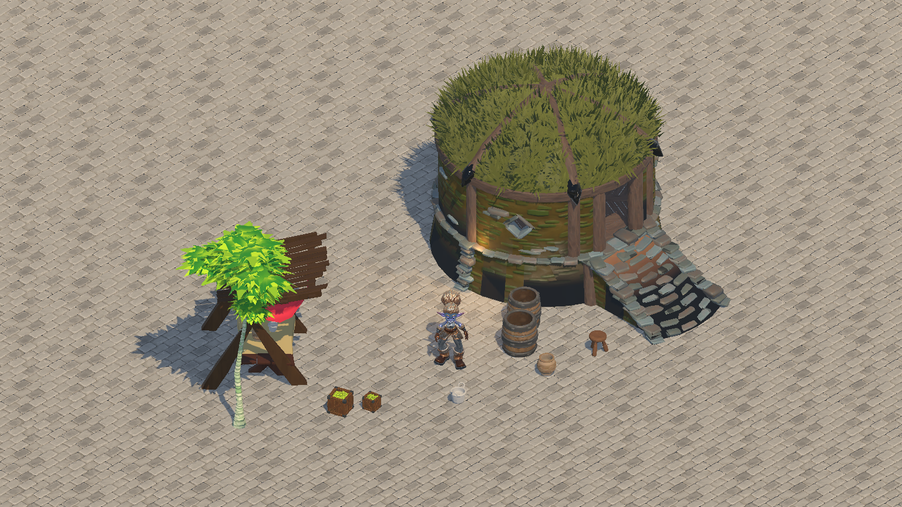
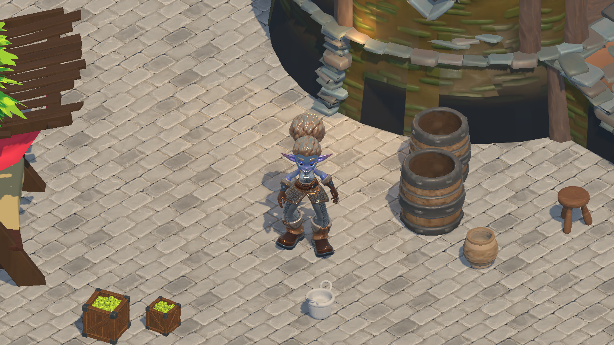
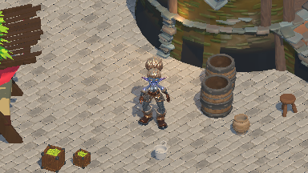
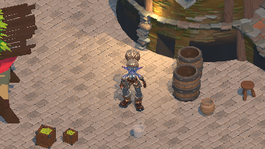
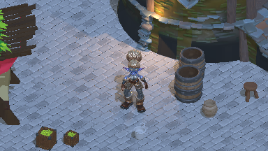

Briarwake · BW-097-T03 · reference-review-v6 · 2026-10-20
Project Titan · a courtyard around the character
Awaiting review of Project Titan courtyard
A 1.8m Adventurer stands on cobblestone paving beside a small market. Barrels, pottery,
containers, produce crates and a stool provide nearby detail; the house, birch and canopy
establish larger scale. Select each image to inspect its full resolution.

Whole courtyard · native-resolution PBR · 12m orthographic height.
Matching pixelated overview
· Measured heights and support placement.
Before and after pixel presentation
Native-resolution PBR versus 384×216 nearest presentation. The overview pair also shows the
whole courtyard. No custom toon/outline shader is active; the pairs isolate rendering
resolution. Day, close view / orthographic height 4.5m, heading 135°, identical camera, pose,
materials and lights. Both images have the same 1536×864 dimensions. Select an image to
inspect the full-size capture.

Before · native-resolution PBR · pixel presentation off
After · 384×216 with nearest integer upscale · current prototype
The actual runtime checks unchanged framing, integer scale, different native/pixel readbacks
and exact restoration of the original viewport pixels.
Comparison execution and image hashes. The
high-resolution image is diagnostic; gameplay readability still needs review at 384×216.
Principal concept and gameplay pixels
The original concept remains the appearance reference. The current courtyard uses Titan assets
and starts in the closer view, with a separate overview. These are comparison inputs; artistic
acceptance remains pending.
Principal concept · unchanged SHA-256
12fb86f3b96226f20aacde1c135fcd3e29c7eb0fc4ffa6a68a3007b695fc3abc

Close view · 384×216 gameplay pixels · day / 4.5m orthographic height. Character scale
remains 1.8m.
Character, props, depth and lighting
Character
Principal concept · native source crop
Courtyard · projected region in the declared capture
The user found the Moore RPG scene hard to see and requested a scene from ProjectTitan. A
complete Adventurer in its compatible source idle replaces the modular knight. The
character is 1.8m tall, with unchanged proportions and original color/normal/packed PBR
maps. The closer view is now the initial view; overview shows the larger surroundings.
Judge readability in both actual captures; no human acceptance is claimed.
Props
Principal concept · native source crop
Courtyard · projected region in the declared capture
A market canopy/table, 0.85–0.9m barrels, 0.25–0.45m pottery/containers, 0.35–0.5m produce
crates and a 0.5m stool surround the adventurer. The 4.8m house and 5.2m birch establish
larger scale. Runtime bounds, exact declared heights and support placement are retained.
Contact
Principal concept · native source crop
Courtyard · projected region in the declared capture
Grounded feet, barrel bases, the house and canopy meet a flat receiver textured with
original Titan cobblestone PBR maps. The tabletop props use the measured table top as
their support. Height/position, support contact, overhang and character-footprint checks
reject incorrect placement. This is not AO/contact-depth effect feasibility.
Palette
Principal concept · native source crop
Courtyard · projected region in the declared capture
Original Titan material colors, foliage, grassy roof and cobblestone supply the scene
palette. Export-only PBR materials and unsaved conventional texture duplicates repair
black/white conversion failures without changing source material samplers. Lighting is
reduced to retain color. Final toon/outline choices remain T05.
Native gameplay pixels
Each image below has 384×216 source pixels, displayed 1:1 when room permits. Compare character
part separation and warm/cool light in the initial close view here.
Day · 384×216 native pixels

Warm · 384×216 native pixels

Cool · 384×216 native pixels
Close gameplay view ·
Native Retina output with independent HUD
· Actual execution and capture hashes
Imported fixture provenance
The user-selected Project Titan library supplies the character and courtyard assets. Source
and converted models/textures remain local; the recipe and rendered evidence are retained. The
original Unreal project is read-only. Reproduction requires an authorized local copy of that
library.
Selected asset recipe ·
Engine, source/dependency and converted hashes ·
Unreal export log
-
Eleven bounded exports supply a complete source character, nine scenery/prop meshes and a
paving-material donor. Source and converted assets remain local.
-
Source cloth/wind/Blueprint/gameplay behavior is not transferred; the character is frozen in
one compatible source idle.
-
Only selected PBR graphs/maps transfer. Unsaved texture duplicates disable virtual streaming
for export without modifying original material samplers or saved input assets.
-
Paving geometry is an original flat receiver with tiled authored Titan cobblestone textures;
terrain/steps do not authorize gameplay traversal.
Proposed observable bounds
| Area |
Review proposal |
Decision |
| detail |
The 1.8m character must read clearly as a complete humanoid in the initial close view
(4.5m ortho height) and remain identifiable in the overview (12m). Inspect head, torso,
arms and separate boots at native 384×216; native-resolution images diagnose scene/asset
quality but do not establish pixel readability.
|
Proposed |
| proportions |
Use physically sensible scene proportions: character 1.8m; small items 0.25–0.5m;
barrels 0.85–0.9m; canopy 2.8m; house 4.8m; birch 5.2m. Pose precedes measurement;
uniform scaling preserves proportions. Bases contact ground/support and the character
footprint stays clear. Overview/close focus heights are 3.0m/1.0m.
|
Proposed |
| palette-depth-lighting |
The Adventurer silhouette remains separable from paving, the house and foliage in all
three lighting states. Boots and building foundations meet the ground; architecture
depth stays visible and amber light preserves character part separation.
|
Proposed |
| motion |
T04/T09 must show no stationary pixel changes, no repeated crawl/shimmer on rigid edges
during slow/diagonal tracking, no one-frame silhouette disappearance or outline-width
pumping. One internal-pixel silhouette lines and selective convex highlights are
reviewed in T05. No motion pass is claimed in T03.
|
Proposed |
| composition |
No filled-surface outlines, stale reflection/depth frames, actor disappearance or
unauthorized information in later combined cases; fallback deviations need explicit
review.
|
Proposed |
Provisional measurement budgets — approval required
Proposal for this source probe on Apple M2 Max / Metal: 60 FPS; CPU frame p95 ≤8 ms; GPU frame
p95 ≤8 ms; peak process RSS ≤1,024 MiB; peak engine rendering allocations ≤256 MiB. Use
384×216 internal and 960×640 logical output on actual Retina ×2. These are proposals, with no
measured compliance claim. T10 must retain warmup, raw samples, percentiles and separate
process/engine memory accounting; unavailable GPU timings cannot pass.
Proposed deviations
-
User-selected Project Titan assets replace the Moore RPG fixture. A complete source
Adventurer avoids modular-part alignment errors. The house, birch, market furniture and
small props form a courtyard rather than an asset lineup.
-
The original ground receiver uses authored Titan cobblestone maps. The paving export
supplies its material only. Uniform per-asset normalization establishes sensible comparison
heights; these do not define gameplay dimensions.
-
Source graphs and virtual-texture readbacks produced black or white exports. Unsaved PBR
materials and unsaved conventional texture duplicates transfer the original authored maps
per slot, while preserving original material samplers. Export limitations remain explicit.
-
Reference-only framing uses orthographic height 12m for the whole courtyard and 4.5m for the
initial closer view, with focus heights 3m/1m. T02 pixel resolution, presentation/window
policy and angles remain unchanged. The character stays at normal height instead of being
enlarged to compensate for distant framing.
-
No final toon/outline, motion, water, contact-depth, atmosphere or performance/package
acceptance is claimed.
Supplementary research
-
Outlines / Camera / Lighting
· Low-poly silhouettes, independent convex highlights, grid-aligned camera with residual
correction, restrained toon light. These guide later cases; historical custom Godot build is
not current capability evidence. Article text inspected 2026-10-19
-
Depth and normal outlines ·
Neighbor texel tests and surface/view-angle artifact checks inform T05; Unity-specific
implementation and SMAA are not adopted as Godot defaults.
Article text inspected 2026-10-19
-
00:03 · At 00:03 the
Unity game-view scene separates pale stone stairs/columns and brown ground from green
foliage with broad cast shadows. Adopt the readable large masses and restrained green/stone
palette as a comparison observation; this is neither the principal appearance target nor
Godot capability evidence.
Actual decoded frame visually inspected by Codex on 2026-10-19; no human art
approval.
Inspected frame
-
00:30 · At 00:30 the
Blender view shows plain squared columns with stepped bases and simple stair/terrain masses
before detailed surface work. Adopt simple architectural prop silhouettes beneath
character-level detail; no model, texture or authoring pipeline is copied. This modeling
view cannot certify gameplay pixel readability.
Actual decoded frame visually inspected by Codex on 2026-10-19; no human art
approval.
Inspected frame
Review decision
Reviewer: None · approval: None
-
The user still found the earlier Moore RPG scene hard to see. This Project Titan courtyard
requires renewed human readability review.
-
Human approval of visual/motion bounds, proposed budgets and deviations has not been
received.
Confirm or revise the visual bounds, budgets and deviations. Supplementary frames at 00:03
and 00:30 have been inspected separately; the original 00:00/04:40 proposals are superseded.
Human approval establishes a comparison baseline only. Later motion/effect/package tests
remain required.
Source of review decisions: visual-review.json. Regenerate
this sheet with python3 validation/tickets/BW-097-T03/build_review.py from
mmo_docs/. The concept remains unchanged, comparison crops use SVG view boxes, and no
reference art is imported into the game.